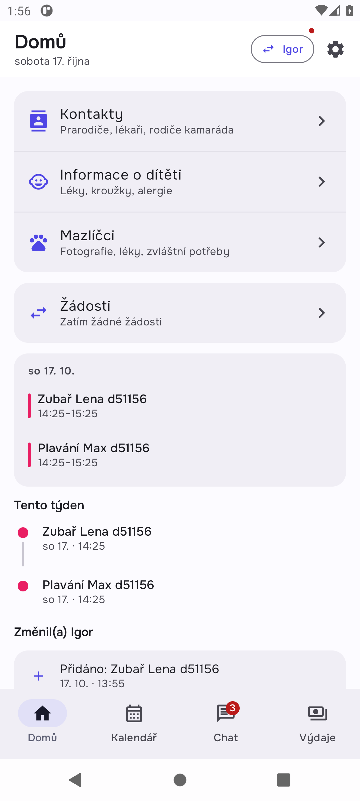
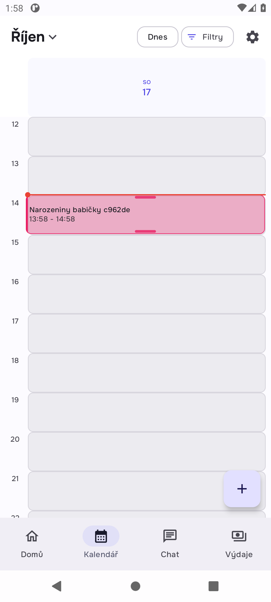
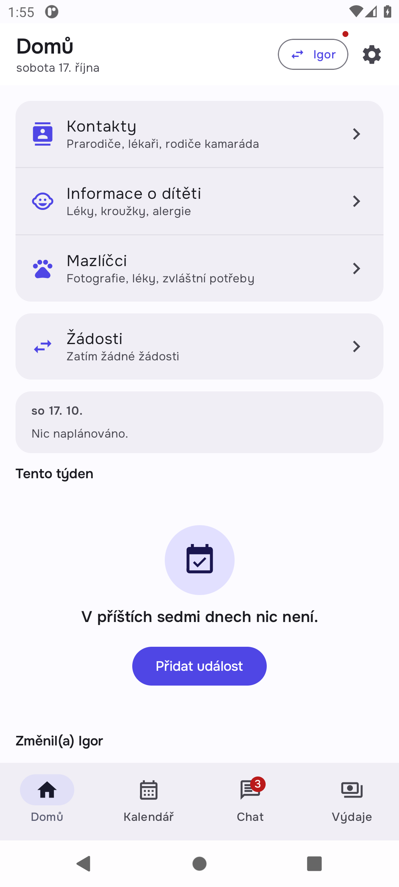
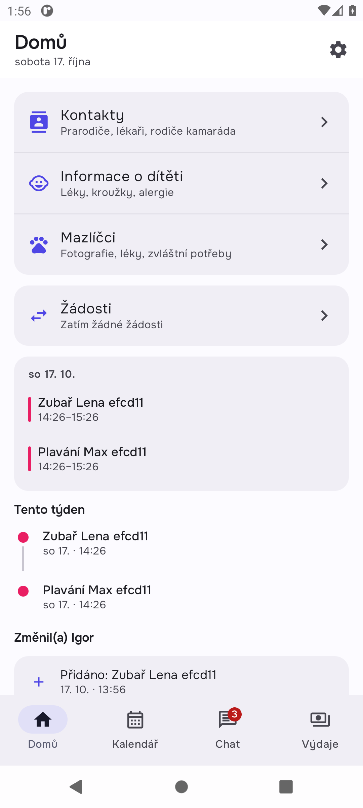
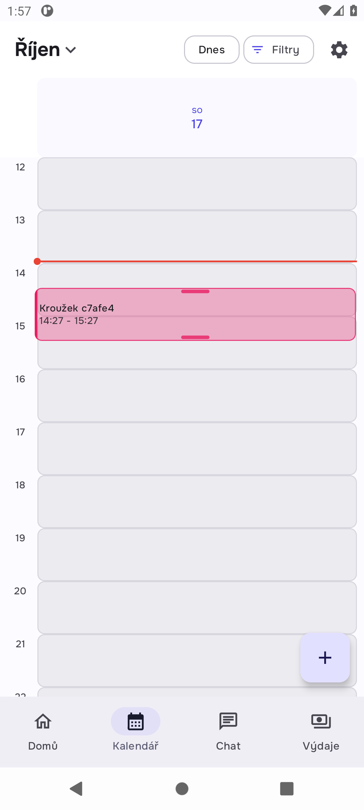
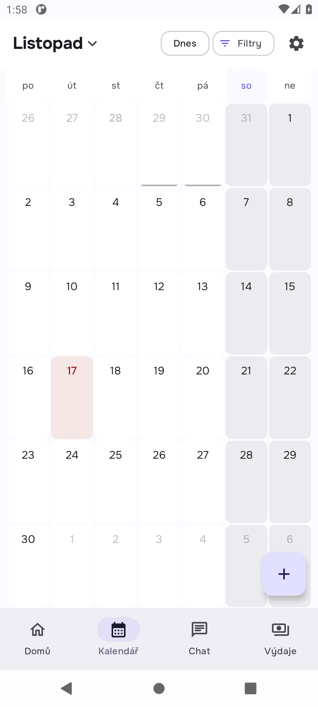
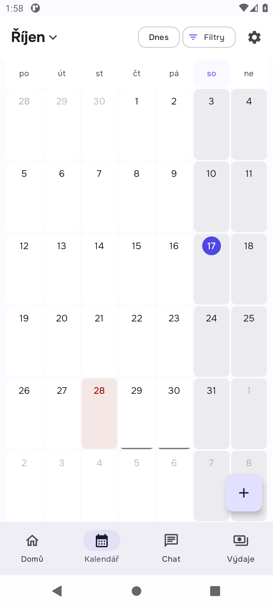

Failed Home's today card in the family with Igor home_today
Expected "Zubař Lena d51156" is on Home; "Plavání Max d51156" from the family with Carol is not
Actual the other family's event "Plavání Max d51156" is shown on Home

Failed Home's today card in the family with Igor home_today
Expected "Zubař Lena d51156" is on Home; "Plavání Max d51156" from the family with Carol is not
Actual the other family's event "Plavání Max d51156" is shown on Home
Failed Every push names the family it belongs to pushes
Expected Igor's pushes to Zuzana name the family with Igor; Carol's name the family with Carol
Actual Igor's records_shared push names family HOGlDdcrbjb18cXBVzW0SzCDCP5v__HqtaE4D3elyMYw66qHK7MY6VyZbH; Igor's pairing_accepted push names family HOGlDdcrbjb18cXBVzW0SzCDCP5v__HqtaE4D3elyMYw66qHK7MY6VyZbH; Igor's chat_message push names family HOGlDdcrbjb18cXBVzW0SzCDCP5v__HqtaE4D3elyMYw66qHK7MY6VyZbH; Igor's chat_message push names family HOGlDdcrbjb18cXBVzW0SzCDCP5v__HqtaE4D3elyMYw66qHK7MY6VyZbH; Igor's chat_message push names family HOGlDdcrbjb18cXBVzW0SzCDCP5v__HqtaE4D3elyMYw66qHK7MY6VyZbH; Carol's records_shared push names family HqtaE4D3elyMYw66qHK7MY6VyZbH__SwCljHX6IArV5wTBKVOe1PGSdK3s; Car

Failed Home's today card in the family with Carol home_today
Expected "Plavání Max efcd11" is on Home; "Zubař Lena efcd11" from the family with Igor is not
Actual the other family's event "Zubař Lena efcd11" is shown on Home

Failed Every push names the family it belongs to pushes
Expected Igor's pushes to Zuzana name the family with Igor; Carol's name the family with Carol
Actual Igor's chat_message push names family 3JJjVkTzXjV8esV7aa2WgC1f5uIP__e3CAA75KB4pqMzoiOU6sx6JkPVg6; Igor's chat_message push names family 3JJjVkTzXjV8esV7aa2WgC1f5uIP__e3CAA75KB4pqMzoiOU6sx6JkPVg6; Igor's pairing_accepted push names family 3JJjVkTzXjV8esV7aa2WgC1f5uIP__e3CAA75KB4pqMzoiOU6sx6JkPVg6; Igor's records_shared push names family 3JJjVkTzXjV8esV7aa2WgC1f5uIP__e3CAA75KB4pqMzoiOU6sx6JkPVg6; Igor's chat_message push names family 3JJjVkTzXjV8esV7aa2WgC1f5uIP__e3CAA75KB4pqMzoiOU6sx6JkPVg6; Carol's chat_message push names family e3CAA75KB4pqMzoiOU6sx6JkPVg6__pPTU7lcpbMes4D0uvCxPhmzhOjWE; Carol

Failed Create a one-off event through the form one_off
Expected "Rodičovská schůzka 28db24" is in Day view and on Igor's phone
Actual Timed out waiting for 30000 ms

Failed Zuzana renames it through the preview's Edit edit_on_screen
Expected The new title is in Day view
Actual Failed to inject touch input. Can't retrieve node at index '0' of '(Text + InputText + EditableText contains 'Kroužek c7afe4' (ignoreCase: false) as substring) && (OnClick is defined)' There are no existing nodes for that selector.

Failed Create a private event private_not_on_server
Expected Only Zuzana has it: not on the server, not on Igor's phone
Actual Timed out waiting for 30000 ms

Failed Delete it from the preview, then Undo undo_restores
Expected The event is back
Actual Failed to inject touch input. Can't retrieve node at index '0' of '(Text + InputText + EditableText contains 'Narozeniny babičky c962de' (ignoreCase: false) as substring) && (OnClick is defined)' There are no existing nodes for that selector.

Passed Pair Carol as a second co-parent and let each co-parent write in their own family setup
Expected Zuzana's phone knows two families; each family holds an event, an expense, a child and a message
Actual Zuzana's phone knows two families; each family holds an event, an expense, a child and a message

Failed Home's today card in the family with Igor home_today
Expected "Zubař Lena d51156" is on Home; "Plavání Max d51156" from the family with Carol is not
Actual the other family's event "Plavání Max d51156" is shown on Home
Could not run The Expenses tab in the family with Igor expenses_list
Expected "Boty Lena d51156" is listed; "Kroužek Max d51156" is not
Actual an earlier step failed: home_today

Could not run The Chat tab in the family with Igor chat_thread
Expected Igor's message is in the thread; Carol's is not
Actual an earlier step failed: home_today

Could not run The switcher says the other family has something new switcher_dot
Expected Home's family chip carries the dot for new messages in another family
Actual an earlier step failed: home_today

Passed What reaches Igor's and Carol's phones after their syncs coparents_phones
Expected Igor has only his family's event, expense and child; Carol only hers
Actual Igor has only his family's event, expense and child; Carol only hers

Failed Every push names the family it belongs to pushes
Expected Igor's pushes to Zuzana name the family with Igor; Carol's name the family with Carol
Actual Igor's records_shared push names family HOGlDdcrbjb18cXBVzW0SzCDCP5v__HqtaE4D3elyMYw66qHK7MY6VyZbH; Igor's pairing_accepted push names family HOGlDdcrbjb18cXBVzW0SzCDCP5v__HqtaE4D3elyMYw66qHK7MY6VyZbH; Igor's chat_message push names family HOGlDdcrbjb18cXBVzW0SzCDCP5v__HqtaE4D3elyMYw66qHK7MY6VyZbH; Igor's chat_message push names family HOGlDdcrbjb18cXBVzW0SzCDCP5v__HqtaE4D3elyMYw66qHK7MY6VyZbH; Igor's chat_message push names family HOGlDdcrbjb18cXBVzW0SzCDCP5v__HqtaE4D3elyMYw66qHK7MY6VyZbH; Carol's records_shared push names family HqtaE4D3elyMYw66qHK7MY6VyZbH__SwCljHX6IArV5wTBKVOe1PGSdK3s; Car
Passed Pair Carol as a second co-parent and let each co-parent write in their own family setup
Expected Zuzana's phone knows two families; each family holds an event, an expense, a child and a message
Actual Zuzana's phone knows two families; each family holds an event, an expense, a child and a message
Passed Switch to the family with Carol switch
Expected The switcher lists Carol's family and the app shows it
Actual The switcher lists Carol's family and the app shows it

Failed Home's today card in the family with Carol home_today
Expected "Plavání Max efcd11" is on Home; "Zubař Lena efcd11" from the family with Igor is not
Actual the other family's event "Zubař Lena efcd11" is shown on Home
Could not run The Expenses tab in the family with Carol expenses_list
Expected "Kroužek Max efcd11" is listed; "Boty Lena efcd11" is not
Actual an earlier step failed: home_today

Could not run The Chat tab in the family with Carol chat_thread
Expected Carol's message is in the thread; Igor's is not
Actual an earlier step failed: home_today

Could not run The switcher says the other family has something new switcher_dot
Expected Home's family chip carries the dot for new messages in another family
Actual an earlier step failed: home_today

Passed What reaches Igor's and Carol's phones after their syncs coparents_phones
Expected Igor has only his family's event, expense and child; Carol only hers
Actual Igor has only his family's event, expense and child; Carol only hers

Failed Every push names the family it belongs to pushes
Expected Igor's pushes to Zuzana name the family with Igor; Carol's name the family with Carol
Actual Igor's chat_message push names family 3JJjVkTzXjV8esV7aa2WgC1f5uIP__e3CAA75KB4pqMzoiOU6sx6JkPVg6; Igor's chat_message push names family 3JJjVkTzXjV8esV7aa2WgC1f5uIP__e3CAA75KB4pqMzoiOU6sx6JkPVg6; Igor's pairing_accepted push names family 3JJjVkTzXjV8esV7aa2WgC1f5uIP__e3CAA75KB4pqMzoiOU6sx6JkPVg6; Igor's records_shared push names family 3JJjVkTzXjV8esV7aa2WgC1f5uIP__e3CAA75KB4pqMzoiOU6sx6JkPVg6; Igor's chat_message push names family 3JJjVkTzXjV8esV7aa2WgC1f5uIP__e3CAA75KB4pqMzoiOU6sx6JkPVg6; Carol's chat_message push names family e3CAA75KB4pqMzoiOU6sx6JkPVg6__pPTU7lcpbMes4D0uvCxPhmzhOjWE; Carol
Failed Create a one-off event through the form one_off
Expected "Rodičovská schůzka 28db24" is in Day view and on Igor's phone
Actual Timed out waiting for 30000 ms
Could not run Create a weekly event weekly
Expected "Plavání Lena 28db24" repeats in next week's Week view and is one row on Igor's phone
Actual an earlier step failed: one_off
Could not run Create an event with a reminder an hour before reminder
Expected The reminder is stored and scheduled
Actual an earlier step failed: one_off

Could not run Create an all-day event all_day
Expected The form offers an all-day option
Actual an earlier step failed: one_off

Could not run Create an event about Lena, with two children in the family about_lena
Expected The event names Lena and Igor sees that
Actual an earlier step failed: one_off

Passed Igor adds an event for today seed
Expected It reaches Zuzana's Day view
Actual It reaches Zuzana's Day view

Failed Zuzana renames it through the preview's Edit edit_on_screen
Expected The new title is in Day view
Actual Failed to inject touch input. Can't retrieve node at index '0' of '(Text + InputText + EditableText contains 'Kroužek c7afe4' (ignoreCase: false) as substring) && (OnClick is defined)' There are no existing nodes for that selector.
Could not run The edit keeps what the form does not show edit_keeps_fields
Expected Audience, creator and family unchanged on the server; Igor sees the new title
Actual an earlier step failed: edit_on_screen

Failed Create a private event private_not_on_server
Expected Only Zuzana has it: not on the server, not on Igor's phone
Actual Timed out waiting for 30000 ms
Passed Zuzana creates an event seed
Expected It is in Day view
Actual It is in Day view

Failed Delete it from the preview, then Undo undo_restores
Expected The event is back
Actual Failed to inject touch input. Can't retrieve node at index '0' of '(Text + InputText + EditableText contains 'Narozeniny babičky c962de' (ignoreCase: false) as substring) && (OnClick is defined)' There are no existing nodes for that selector.
Could not run Delete it again and let Undo lapse delete_is_tombstone
Expected The server keeps a tombstone Igor's phone honours
Actual an earlier step failed: undo_restores

Passed Switch Month, Week and Day views
Expected Each view opens from the title's menu
Actual Each view opens from the title's menu

Passed Page to next month month_paging
Expected The grid pages
Actual The grid pages

Passed Press Today today_button
Expected The grid returns to this month
Actual The grid returns to this month

Passed Open Filters filters_sheet
Expected The filter sheet opens
Actual The filter sheet opens

Could not run Drag an event to another hour in Day view drag_reschedule
Expected It moves
Actual dragging is not automated yet; the device checklist keeps it